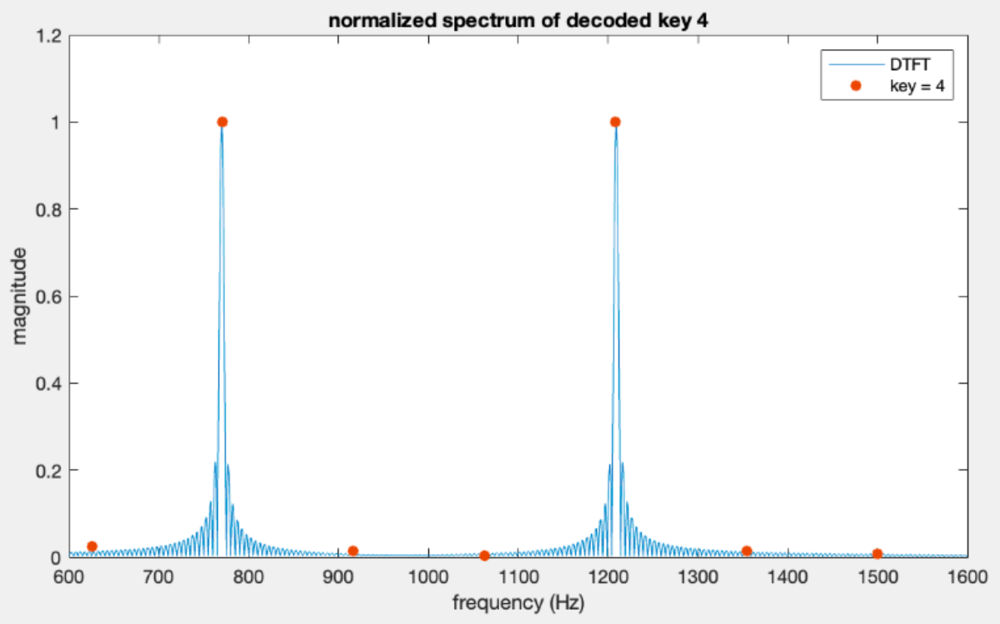
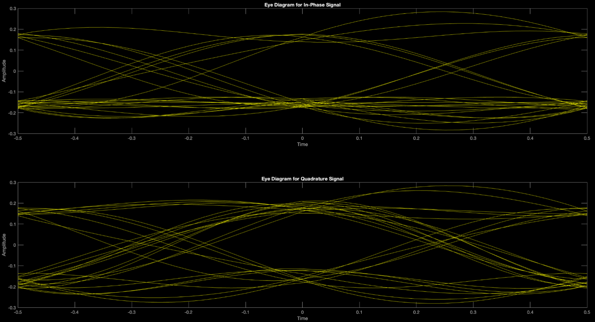

The aim of this project is to synthesize a segment of a recorded speech signal using properties such as the pitch, formants, and an estimation of the signal using autoregressive coefficients (AR coefficients). Comparisons between the speech signals of different speakers saying the phrase “Rutgers” is analyzed, along with the corresponding properties of their speech by comparing the autoregressive coefficients of all signals.
In order to produce a synthesized version of a recorded speech signal, pre-emphasis is applied to a recorded phrase. Then, the spectrum of the signal is found through two methods. Both are used for comparison with the spectrum found through the AR coefficients. Performing the same procedures on the signal derived through the AR coefficients, a spectrum similar to the pre-emphasized spectrum of the recorded phrase is obtained. This spectrum is then used for synthesis. Also, through analysis of the cepstrum plot of the pre-emphasized signal, the pitch of the recorded speech signal is acquired. With these parameters, synthesizing an approximation of the recorded phrase is made possible.
Using the AR coefficients, the speech signal is synthesized. The AR coefficients were calculated under the assumption that the signal pre-emphasised signal could be expressed as a linear combination of previous samples. This is utilized to calculate the the estimation of the signal. It is then played using MATLAB’s soundsc function at a rate of 8000 Hz, where the sound output sounds similar to the original voice segment, albeit a little garbled. As seen above, the plot of the synthesized speech closely matches the plot of the actual speech.
Dual-Tone Multi-Frequency Decoder

In a dual-tone multi-frequency (DTMF) phone, each pressed key generates a sum of two sinusoidal signals of two prescribed frequencies, one frequency chosen from a “low” group, and the other, from a “high” group of frequencie. The generated signal goes over the phone line and is decoded at the switching center and forwarded on to its destination depending on the decoded number. One method of decoding the pressed key is to perform a DTFT on the received signal and identify the spectral peaks of the two sinusoidal frequencies.
In this project, the spectra of 3 decoded digits is plotted. To do this, the digits' 7-point DTFT is computed at the seven DTMF frequencies. From the two highest DTFT values, the two frequency points are analyzed to decode the pressed keys.
Digital Communication System Design

First, a random array of 1s and 0s is generated. It represents the recieved signal or the inputted bits. This array is used to convolve the square pulse and sinc pulse. After convolution once more, we achieve the plots of the analog recieved signal. This allows us to view the whole signal. Next, 16 arrays with randomly generated values that are equal to energy over SNR are created. These represent the noise. These are then added to the array of bits. Next, two matched filters are created and the array of bits are filtered through them. Looking at the filtered signals, we are able to sample the bits. This allows us to detect the received bits. This sequence of arrays of the received bits is then compared with the inputted bits, allowing us to compute the average number of bit errors. Lastly, the expected number of errors is calculated both analytically and through simulation and plotted.
Escape The Forest
Imagine walking up in deserted room. It is dark and only lit with a single bulb in the center. The last thing you remember is walking your dog around your neighborhood, and then... everything went dark. Where could you be? You walk out the only door and it leads you to a forest. You take a few steps forward and see a sign. “Danger lies Ahead, Go Behind the Cabin First”. Getting the weapon, you continue on the trail.
This game involves a few riddles and parkour puzzles. The riddles are simple, where the sign instructs the user to go somewhere, or press a switch. The parkour is simple as well. It include jumping over a few trees or Logs on the ground. The left-mouse button is used for interacting with the world, such as switches. The player is able to move with WASD and jump with the space bar. Looking around is done with the mouse. There are most definitely going to be dangerous monsters lurking around in this forest. For that reason, the player is given a weapon. The weapon is operate by clicking the right-mouse button. The monsters are programed to act once a player approaches a certain area. They are also programed to continuous advance towards the player until taken out with the weapon.